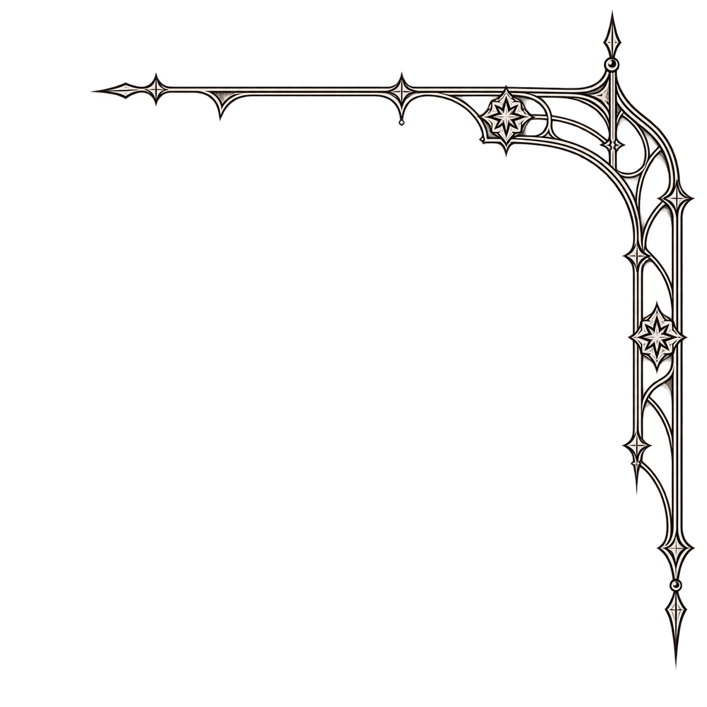

<!doctype html><html lang="zh-CN"><meta charset="utf-8"><meta name="viewport" content="width=device-width,initial-scale=1"><title>审美外挂 · 交织纹饰修订</title>
<style>
*{box-sizing:border-box}body{margin:0;background:#e8e6df;color:#30312b;font:14px/1.6 system-ui,sans-serif}header,footer{max-width:850px;margin:22px auto;padding:0 20px}h1{font-size:19px;font-weight:500;margin:0}p{margin:4px 0 14px;color:#73746c;font-size:13px}.controls{display:flex;gap:8px;flex-wrap:wrap}button{font:inherit;padding:7px 13px;border:1px solid #a8a99c;background:transparent;color:inherit;border-radius:3px;cursor:pointer}button[aria-pressed=true]{background:#33362e;color:white;border-color:#33362e}button:focus-visible{outline:2px solid #333;outline-offset:3px}main{display:grid;grid-template-columns:repeat(2,minmax(0,390px));gap:28px;justify-content:center;padding:0 20px}figure{margin:0;min-width:0}figcaption{display:flex;justify-content:space-between;margin-bottom:10px;font-size:12px}.muted{color:#797a70}.page{position:relative;aspect-ratio:390/844;overflow:hidden;background:#f8f5ee}.art,.brand{position:absolute;inset:0;width:100%;height:100%;display:block}.ornament{position:absolute;left:23.076923%;top:0%;width:76.923077%;height:auto;display:block;opacity:.64;pointer-events:none}.brand{pointer-events:none}.original .ornament{visibility:hidden}.detail{margin-top:24px;border-top:1px solid #c9c9bc;padding-top:16px}footer a{color:inherit;text-underline-offset:3px}@media(max-width:600px){header,footer{padding:0 16px}header{margin:18px auto}main{grid-template-columns:minmax(0,390px);padding:0 12px}.baseline{display:none}h1{font-size:17px}}
</style>
<header><h1>交织纹饰 · 修订版</h1><p>从原画的双线尖拱与星形纹样延展，顶部和右侧形成同一段纹饰。</p><div class="controls"><button id="new" aria-pressed="true">修订版</button><button id="original" aria-pressed="false">原版</button></div></header>
<main><figure class="baseline"><figcaption><span>原版</span><span class="muted">已认可字标与原插画</span></figcaption><div class="page"></div></figure>
<figure><figcaption><span id="label">修订版</span><span class="muted">待审</span></figcaption><div class="page" id="trial"></div></figure></main>
<footer><p>新纹饰在原背景竖线之前结束；主副标、人物和建筑沿用原文件。此页是静态审图，正式首页未替换。</p><a href="assets/tracery-corner-v2.png">查看独立纹饰</a> · <a href="../2026-11-01-p1-geometric-study/">上版复盘</a></footer>
<script>for(const id of ['new','original'])document.getElementById(id).addEventListener('click',()=>{const original=id==='original';document.getElementById('trial').classList.toggle('original',original);document.getElementById('label').textContent=original?'原版':'修订版';document.getElementById('new').setAttribute('aria-pressed',String(!original));document.getElementById('original').setAttribute('aria-pressed',String(original));});</script></html>
